In this part, I take the partial derivatives of the Cameraman image in both the x direction and the y direction. One notable difference between the two is that the partial derivative with respect to x highlights vertical edges, while the partial derivative with respect to y highlights horizontal edges. Once I take the partial derivatives, I get the gradient magnitude by taking the square root of a sum of the squares of the x and y partial derivatives. I can choose how strong I want the edges to be by limiting the magnitude to a certain threshold. For example, a threshold of 0 would show every single edge possible (resulting in almost a white image), while a threshold of 1 (and about 0.7 in the case of the Cameraman image) would show a black image because no edges are visible. After fidgeting with the thresholds, I found that 0.3 was a perfect threshold where the edges of the man get highlighted without the edges of the background getting highlighted.

However, even the best threshold doesn't completely get rid of the unnecessary noise/edges. Therefore, I try a different approach: a lowpass filter, where only low frequencies of an image are shown. To create a lowpass filter, I first blur the image and then convolve that blurred image with a 2D Gaussian filter. Here is the result:

DIFFERENCES: Compared to the non-blurred partial derivatives, the blurred version has more apparent edges, and the images look more dented/bumpy in general.
Another thing I did was to take the DoG (Derivative of Gaussian) filters (which, as its name suggests, is a convolution of the 2D Gaussian and the non-blurred partial derivatives. They look like this:

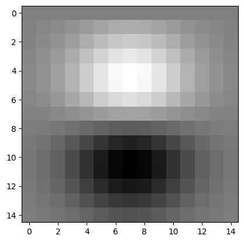
left: DoG Dx, right: Dog Dy
However, this yielded the same image as the blurred version:
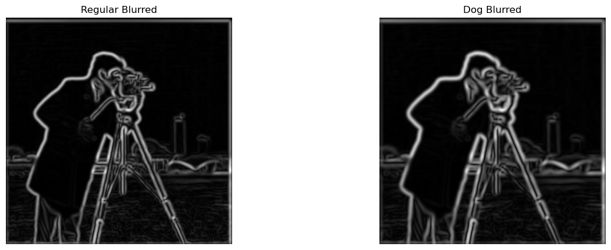
A lowpass filter blurred the image, but a highpass filter (i.e. taking just the high frequencies of the image) sharpens the image. A high pass filter is actually just the low frequencies taken out of the original image, i.e. image - lowpass_image. Compared to the orignal image, the sharpened version has more distinct edges, but the colors look more blunt. To me, I like the regular version better than the sharpened version because the regular version feels more smooth.

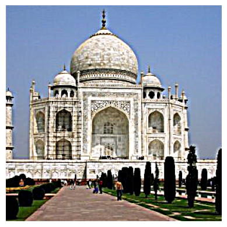
left: original Taj, right: sharpened Taj
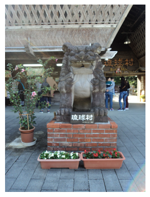

left: original statue, right: sharpened statue
Note: I had issues saving the image that make this image a bit darker and less accurate. A more accurate version of the sharpened image is in my jupyter notebook.


becomes...
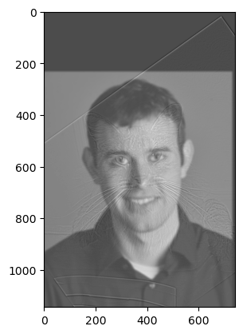
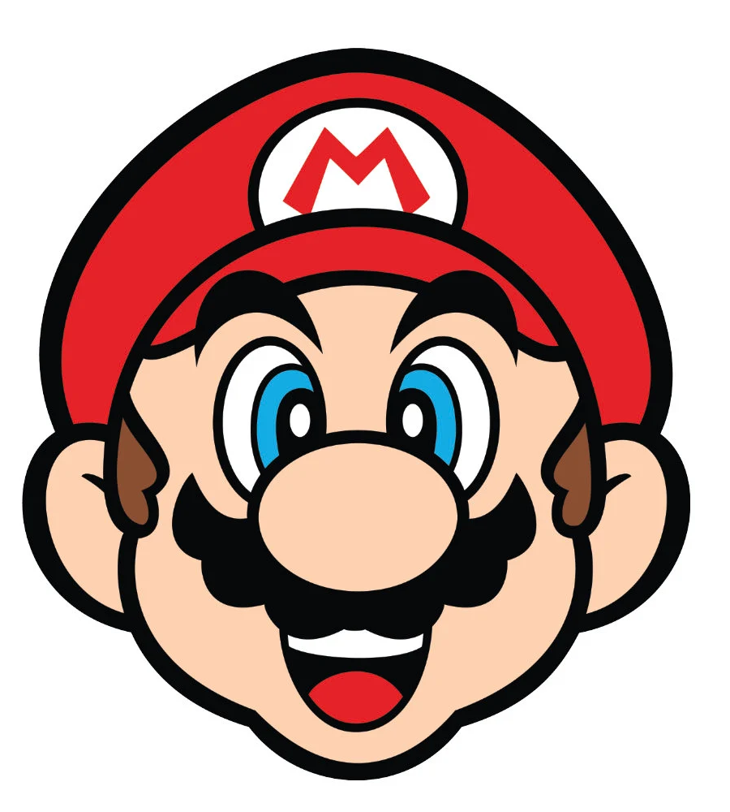
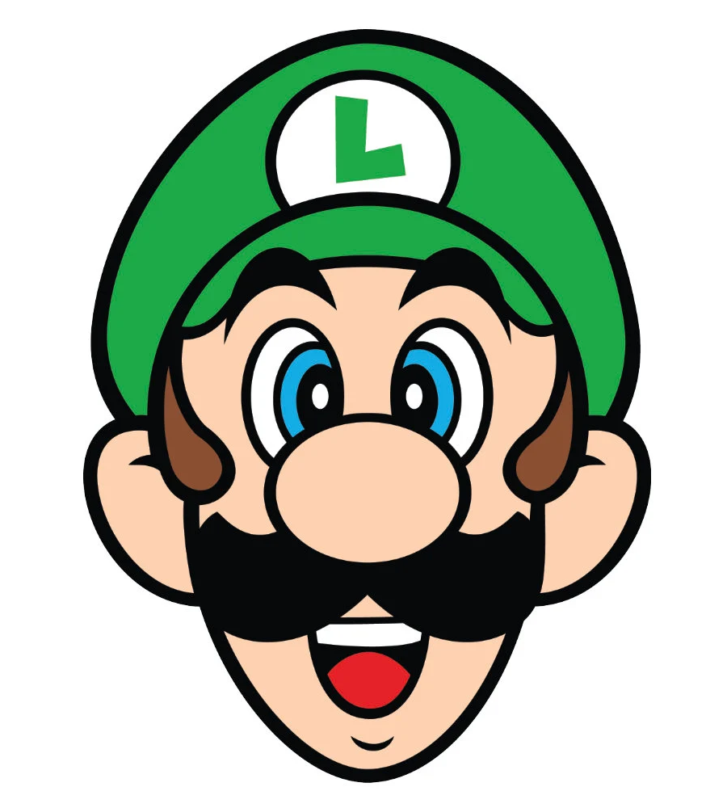
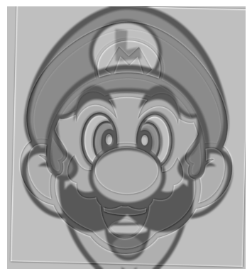
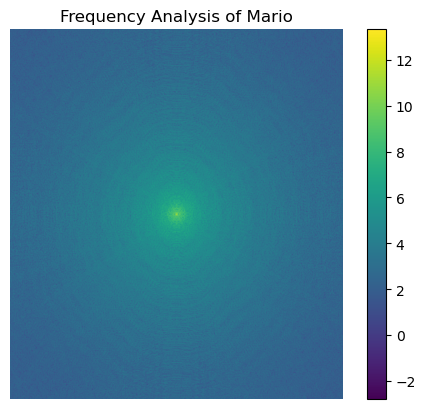
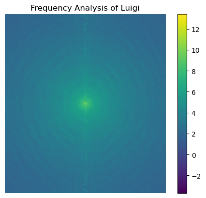
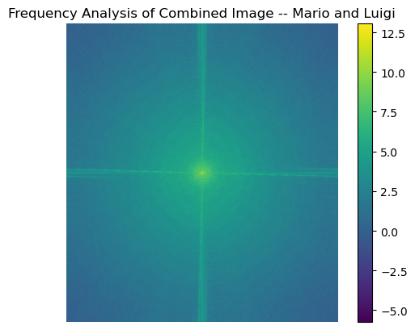
I'm a big fan of Nessie. A lot of people think it doesn't exist, but some people claim they saw it and took photos of it. Is it the case they actually saw a giraffe with fins of a turtle?
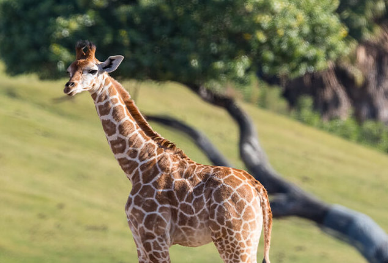

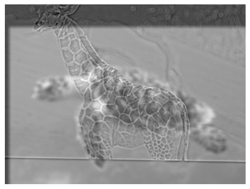
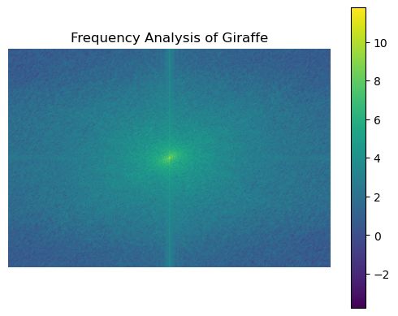
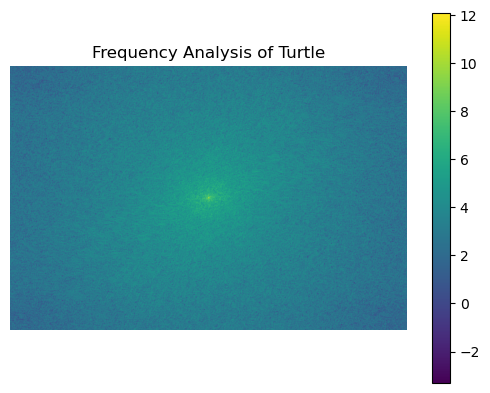
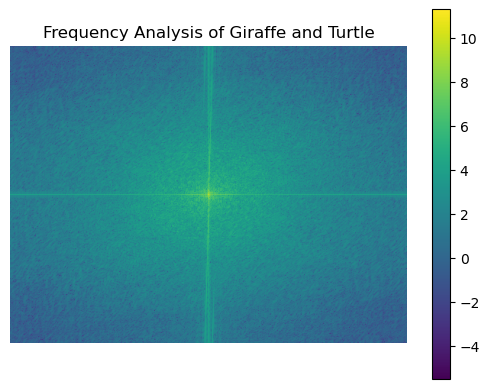
This one was a failure because the two images were too similar evrywhere except the eyes, that it ended up just making the eyes look weird. Hopefully I can use this monkey image for something else...
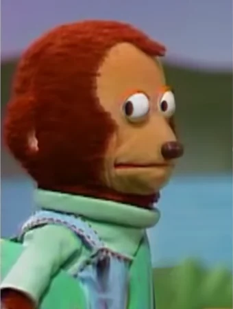

In this section, I implement a Gaussian and Laplacian Stack for images of an apple and orange. At every layer of the Gaussian stack, a lowpass filter is applied (i.e. the image gets blurred). A kth layer of the laplacian stack takes the difference between the kth layer of the Gaussian layer stack and its upscaled image (i.e. k+1th layer of the Gaussian stack, because stacks are first in, last out).


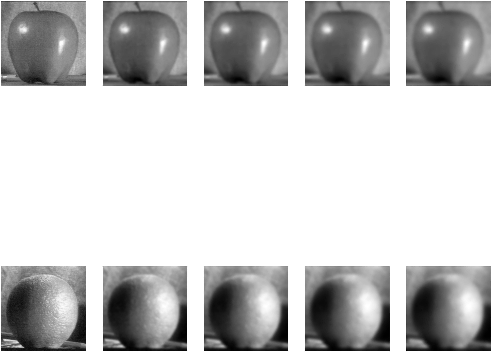
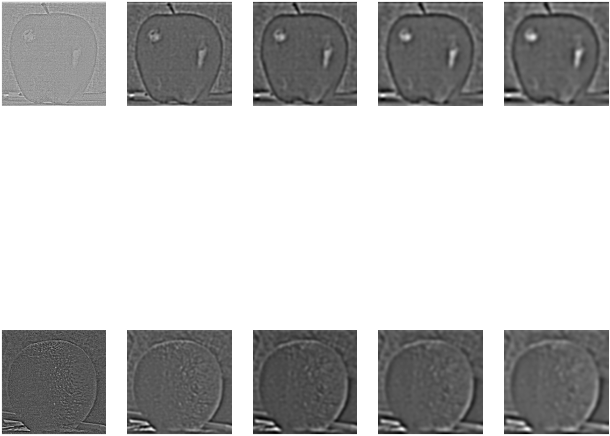
left: Gaussian stack, right: Laplacian stack
Using a black and white mask image, I created a Gaussian stack of the mask in order to blend the apple and the orange together. The equation is pretty simple: Image = mask * Image_A + (1-mask) * Image_B (and this applies to each layer of the laplacian pyramid).
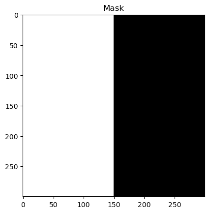
becomes...
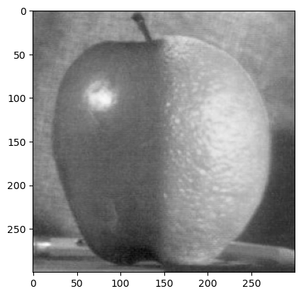
The monkey wasn't good at hybrid images, but perhaps it is good for blending...
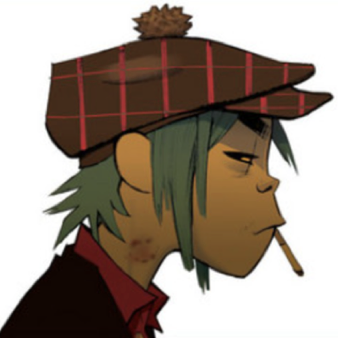
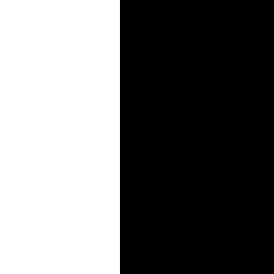
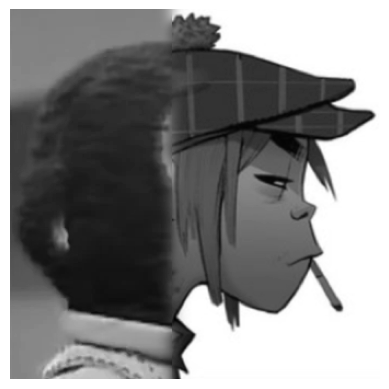
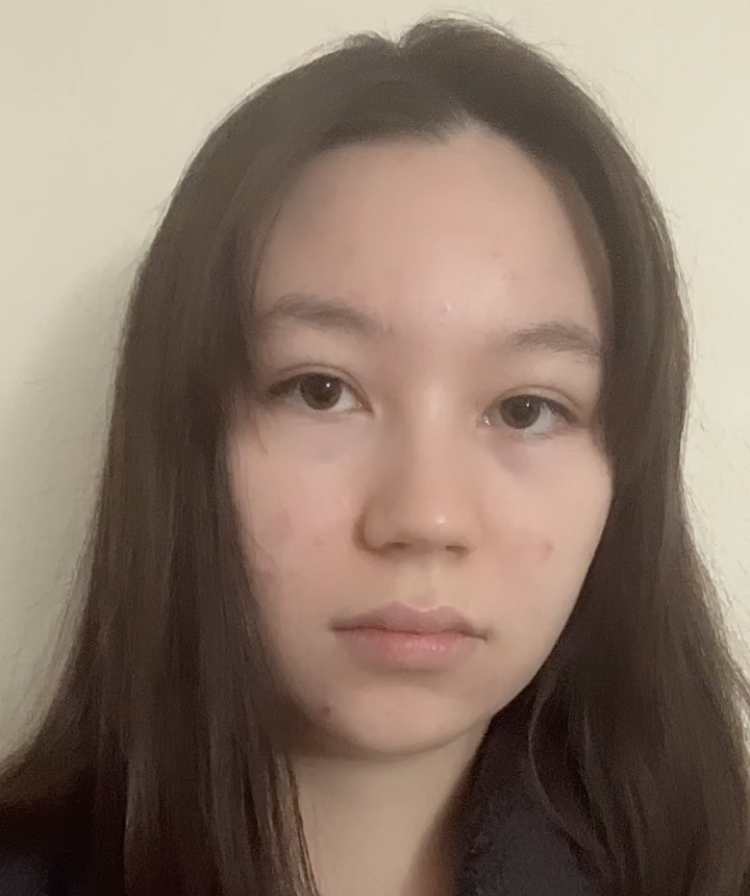
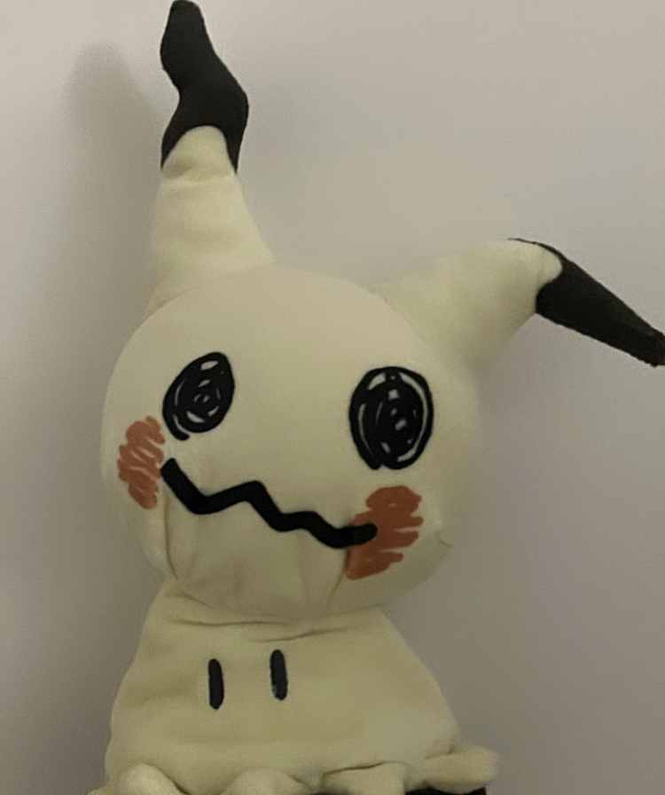
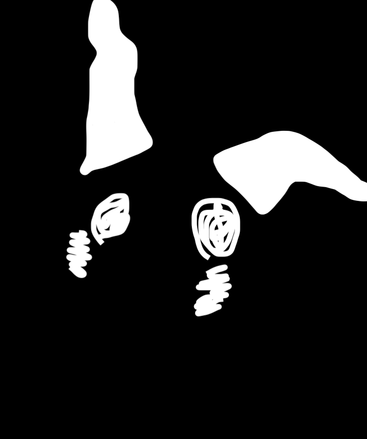
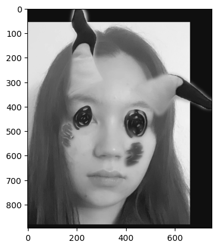